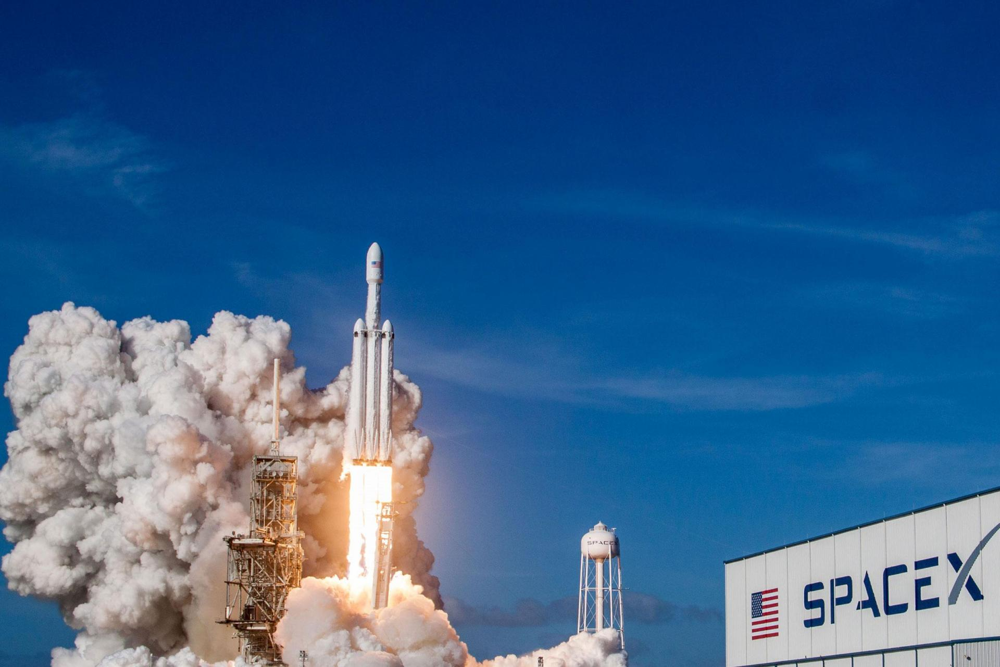

Илон Маск: биография, личная жизнь и история успеха.
Илон Маск – американский предприниматель, инженер и миллиардер. Маск известен как основатель компании SpaceX, в которой также является совладельцем, генеральным директором и главным инженером; главный идейный вдохновитель компании Tesla. 7 января 2021 года стал богатейшим человеком планеты с состоянием по оценочным данным в 185 млрд $. 1 ноября 2021 года стал первым человеком в истории, чье состояние достигло отметки в 300 млрд $.
Детство Илона Маска
Илон Маск родился 28 июня 1971 в Претории, ЮАР. Настоящее имя — Илон Рив Маск. В семье трое детей: у Илона Маска есть младший брат Кимбал и младшая сестра Тоска. Его отец – инженер Эррол Маск, мать – модель Мэй Маск, урожденная Халдеман. Пара жила в одном районе: Эррол работал инженером-строителем, а Мэй была моделью и практикующим диетологом. Илона назвали в честь прадеда, Джона Илона Халдемана, рожденного в 1872 году. Предки по материнской линии Маска иммигрировали из Европы в Нью-Йорк во время Войны за независимость США. Согласно биографам, Маск рос замкнутым ребенком и любил читать. Однажды он запомнил два полных комплекта энциклопедий благодаря фотографической памяти. Будущего миллиардера били в школе, после одной из нападок одноклассников Илону даже пришлось восстанавливать сломанный нос. В 1980 году родители Илона развелись, и мать забрала детей в Дурбан, прибрежный город в ЮАР. Через несколько лет Илон решил переехать к отцу. По воспоминаниям, Эррол был требовательным и жестким человеком, с которым было нелегко. Однако Илон и Кимбал многому научились у него: класть кирпичи, устанавливать сантехнику, подгонять оконные рамы и прокладывать провода.
Юность
В 10 лет Маск получил в подарок компьютер Commodore VIC-20, на котором он научился программировать. Маску было 12 лет, когда он продал за 500 долларов свою первую программу — видеоигру под названием Blastar. Игроку нужно в ней обстреливать инопланетян из лазера. Это стало первой успешной затеей будущего миллиардера. Маск столкнулся с личностным кризисом в четырнадцать лет. Справиться с личностным кризисом помогла книга Дугласа Адамса «Автостопом по Галактике». «Она научила меня тому, как надо задавать вопросы», — рассказывает Маск. Также Илона увлекали инвестиции. Молодой Маск следил за акциями одной фармацевтической компании через газеты и вкладывал в них средства. Когда Илон накопил таким образом пару тысяч долларов, он уехал в Канаду. Родители были против. Маск собирался поступить в университет города Кингстон и жил у канадских родственников. В 1989 году Маск поступил в университет Куинс в Кингстоне и учился там до 1991 года. Позднее перевелся в Пенсильванский университет, где изучал бизнес и физику и получил степень бакалавра. В 1995 году поступил в Стэнфордский университет, чтобы получить PhD по прикладной физике и материаловедению. Через два дня Маск забрал документы: наступил интернет-бум, и Маск решил сосредоточиться на бизнесе. Илон покинул Стэнфорд, чтобы основать свою первую компанию, Zip2 Corporation. После этого началась череда успешных бизнесов Маска.
Компании
Zip2 Corporation
Компания, которую Маск основал вместе с братом Кимбалом, предоставляла и лицензировала программное обеспечение для газет. В 1999 году Zip2 была куплена компанией-изготовителем персональных компьютеров Compaq. Стоимость сделки составила 307 млн долларов, из них Маск получил 22 млн долл. Маску было 28 лет.
X.com
В 1999 году Маск стал одним из основателей системы электронных платежей X.com. Через год компания слилась с Confinity. Одним из продуктов компании был сервис персональных денежных переводов PayPal.
PayPal
PayPal создана в 1998 году компанией Confinity, основателями которой были разработчики Макс Левчин и Питер Тиль. После приобретения X.com Маск вошел в совет директоров. В 2000 году основана компания PayPal Inc, которая быстро стала продвигаться для электронной системы оплаты на интернет-аукционах. Компания стремительно разрослась и в 2001 году была переименована в PayPal. PayPal стала одной из первых компаний, работающих в интернете, которая вышедших на биржу после террористических актов 11 сентября 2001 года. В октябре 2002 года PayPal была куплена eBay за 1,5 млрд долларов США. За 11,7 % акций компании Маск выручил 180 млн долларов.
SpaceX
SpaceX —разработчик серии ракет-носителей и коммерческим оператором космических систем. В отличие от других космических компаний, является не государственной, а частной. Основана Илоном Маском в 2002 году. Бизнесмен вложил в компанию 100 млн долларов, полученных от продажи своих предыдущих компаний. Спустя шесть лет после открытия, в 2008 году, SpaceX подписали контракт с NASA на сумму 1,6 млрд долларов США. Договор предполагал 12 запусков носителя Falcon 9 и космического корабля Dragon к МКС.
Tesla
Tesla – компания-производитель электромобилей, основанная в 2003 году. Tesla Также занимается производством и решений для хранения электрической энергии — SolarCity. В феврале 2004 года Илон Маск инвестировал в компанию 6,5 млн долларов, став председателем совета директоров. Первые прототипы автомобилей премиум-класса были представлены в 2006 году. Тогда же Маск удалось привлечь 100 млн инвестиций, включая инвестиции от Google.
OpenAI
Некоммерческая исследовательская компания из Сан-Франциско открыта в 2015 году. Компания занимается развитием открытого и дружественного искусственного интеллекта на благо интересов общества. Основателями стали сам Маск и Сэм Альтман, президент венчурного фонда Y Combinator. В 2018 году Илон Маск вышел из совета директоров.
Neuralink
В 2017 году Маск основали нейротехнологическую компанию, которая займется разработкой и производством имплантируемых нейрокомпьютерных интерфейсов. Бизнесмен заявил, что стремится сделать устройства для лечения заболеваний головного мозга. Конечная цель компании – усовершенствование людей.
The Boring Company
В 2016 году Маск основал строительную компанию, которая занимается инфраструктурой и прокладкой тоннелей. Один из проектов компании –метро для автомобилей, по которому можно будет перемещаться со скоростью до 240 км/ч.